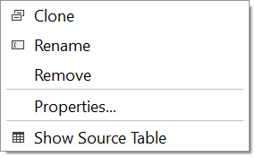
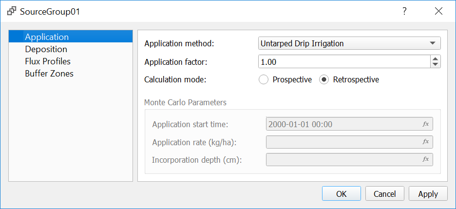
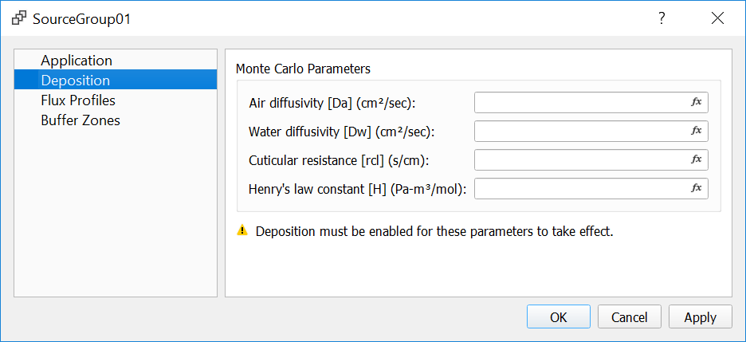
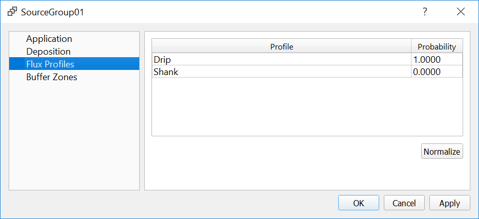
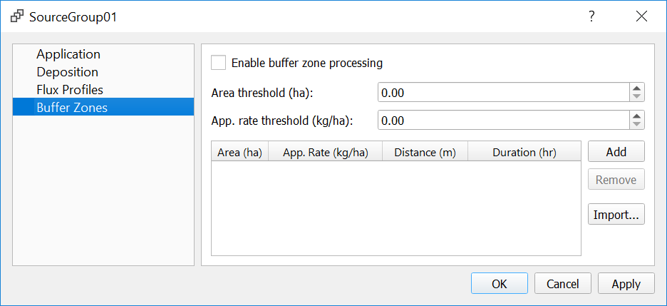

Creating Source Groups¶
After a Source Group has been added to a scenario, the Source Group Context Menu becomes available:
{kind=link}
- Clone
Creates a duplicate source group in the same scenario.
- Rename
Changes the source group name. Must contain only letters and numbers.
- Remove
Removes the source group from the scenario.
- Properties
View and edit parameters for the source group.
- Show Source Table
Opens a table where source properties can be viewed and edited.
Application¶
{kind=link}
A number of common application methods are included in the Application method menu. This is for reference only; choosing an application method does not populate any other dialogs.
Application factor is set to 1 as a default value.
Calculation mode can be Prospective or Retrospective. Select Retrospective if you are modeling past applications with known emissions data, to disable Monte Carlo parameters. If Prospective is selected, additional options associated with Monte Carlo parameters are available.
Deposition¶
{kind=link}
Modeling of dry and/or wet deposition must be enabled in the Dispersion Model dialog box under Scenario settings for gas deposition parameters to take effect.
Physical parameters required for gas deposition modeling include diffusivity in air, Da [cm2/s], the diffusivity in water, Dw [cm2/s], the cuticular resistance to uptake by lipids for individual leaves, rcl [s/cm], and the Henry’s Law constant, H [Pa m3/mol]. Enter values of the physical parameters corresponding to the modeled pollutant.
Flux Profiles¶
{kind=link}
Flux profiles previously defined at the Scenario level can be automatically assigned to sources with a specific probability. All probabilities must sum to 1.
Warning
If flux profiles are added/removed or probabilities are changed after adding sources, you must manually select the affected sources in the Source Table, right click, and select Resample > Flux Profile. All sources must be assigned a flux profile for SOFEA to run.
Buffer Zones¶
{kind=link}
SOFEA can account for buffer zones by setting concentrations to zero at receptors within the buffer zone of a field. The buffer zone distance and duration should match those applicable to the specific fumigant, the size of the fumigated field, and the application rate. To use this option, Enable buffer zone processing needs to be checked.
The Buffer Zone screen allows importing a prepared table of buffer zone distances and durations based on the field size and application rate. A sample CSV file for methyl bromide is included in the examples directory of the application. Alternatively, the same information can be manually entered by adding threshold pairs for area (ha) and application rate (kg/ha) to the table and then inserting buffer distance and duration for each pair of thresholds.
When buffer zone processing is enabled, SOFEA adds a SO BUFRZONE keyword
to the AERMOD input file. This keyword is associated with buffer zone support
in AERMOD, which is an enhancement to the regulatory AERMOD version. For each
source with the SO BUFRZONE keyword, any receptors located
within the source and specified buffer zone distance from the source will not
receive impacts associated with emissions from that field while buffer zone
duration is in effect. The buffer zone keyword uses the following format:
SO BUFRZONE SrcID BZdist StartDT EndDT
SrcID is the source ID; BZdist is the buffer zone distance; StartDT
and EndDT are internally calculated start and end date and time based on
the application start time and a buffer zone duration.
Concentrations resulting from emissions from fields other than the one for which a buffer zone is in effect are calculated at the receptors within a buffer zone if these receptors are outside of the buffer zones of those other fields. If the buffer zone distance is zero, impact from a fumigated field at receptors within that field are not calculated.
Similar to the rings of receptors constructed around area sources, buffer zones are defined as quarter circles away from corners to achieve a constant distance away from the field.
The buffer zone distance is based on the size of the field and the application rate. Based on these two parameters, SOFEA assigns buffer zones to sources by getting the value from the last row for which source area and application rate are less than the threshold values.
Note
To use a single buffer zone for all sources regardless of area and application rate, add one row with zero for the thresholds, and a second row with large values (e.g. 999) for the thresholds.